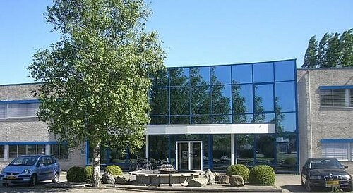
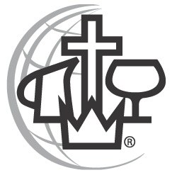

Wij zijn de Evangelische Gemeente CAMA Parousia Zoetermeer. Actief sinds 1977. We zijn een middelgrote gemeente met een energieke mix van jonge gezinnen, kinderen, jongeren en senioren.
Sporen
Onze gemeente heeft haar sporen nagelaten in Zoetermeer en omstreken. Zo mochten we drie dochtergemeenten stichten: in Delft, Gouda en Boskoop. En in 1998 kochten we een oude gymzaal aan de Broekwegzijde in de wijk De Leyens, niet ver van het Stadshart. De gemeenteleden zelf maakten dit in korte tijd geschikt als samenkomstgebouw. In januari 1999 werd het officieel in gebruik genomen. Parousia Zoetermeer bleef echter groeien, zodat we opnieuw moesten verhuizen.
De Uitkijk
Eind 2006 kochten we een bedrijfspand aan de Wattstraat. Gelegen in een oud industriegebied, dicht in de buurt van de toen nog in aanbouw zijnde wijk Oosterheem. Opnieuw transformeerden de gemeenteleden het pand met gezamenlijke inspanning tot samenkomstgebouw. De eerste officiële samenkomst was op 13 mei 2007. Klik hier voor een indruk van De Uitkijk.

Cama-gemeente
CAMA staat voor Christian And Missionary Alliance. Deze organisatie begon in 1887 met dr. A.B. Simpson, een presbyteriaanse predikant in de Verenigde Staten. Het was zijn overtuiging dat wanneer zendingsbewuste christenen uit verschillende kerken en groepen zich zouden verenigen, de verbreiding van het Evangelie van Jezus Christus een snelle doorbraak zou beleven.
Het logo van CAMA is opgebouwd uit vijf symbolen. De betekenis van het logo kunt u hier lezen.

Zendingsgemeente
Op dit moment kent CAMA zo’n 1100 zendelingen, werkzaam in 45 verschillende landen. Ze streven er altijd naar, zelfstandige en zendingsbewuste gemeenten te stichten met een groot hart voor de verkondiging van het Evangelie, wereldwijd en in eigen land. Ook Parousia Zoetermeer heeft uit de eigen gelederen tal van zendelingen mogen uitzenden, onder andere naar Afrika, Azië en Oost-Europa.
ABC-gemeente
De Nederlandse CAMA-gemeenten zijn op 12 oktober 2006 gefuseerd met de Broederschap van Baptistengemeenten. We vormen nu gezamenlijk de Alliantie van Baptisten en CAMA-gemeenten (kortweg: ABC-gemeenten). Dit verband startte met 52 gemeenten en wordt geleid door een bestuur van zeven personen.

Parousia
Tot slot nog onze ‘eigen’ naam: Parousia. Dit Griekse woord betekent zowel ‘Aanwezigheid’, of ‘Tegenwoordigheid’, als ‘Komst’. We drukken ermee uit dat we geloven dat Christus aanwezig is in zowel ons leven als in onze samenkomsten. En daarnaast dat we leven vanuit de verwachting dat Jezus Christus als Persoon zal terugkomen op aarde. We zien uit naar Zijn (weder)komst!
Ons logo is een beeld van onze visie: mensen tot Jezus brengen rond het kruis en hen dopen en tot discipelen maken. Wat ook tot uitdrukking komt in dit logo is, dat we rond het kruis een eenheid vormen, hoewel we allemaal verschillend zijn.